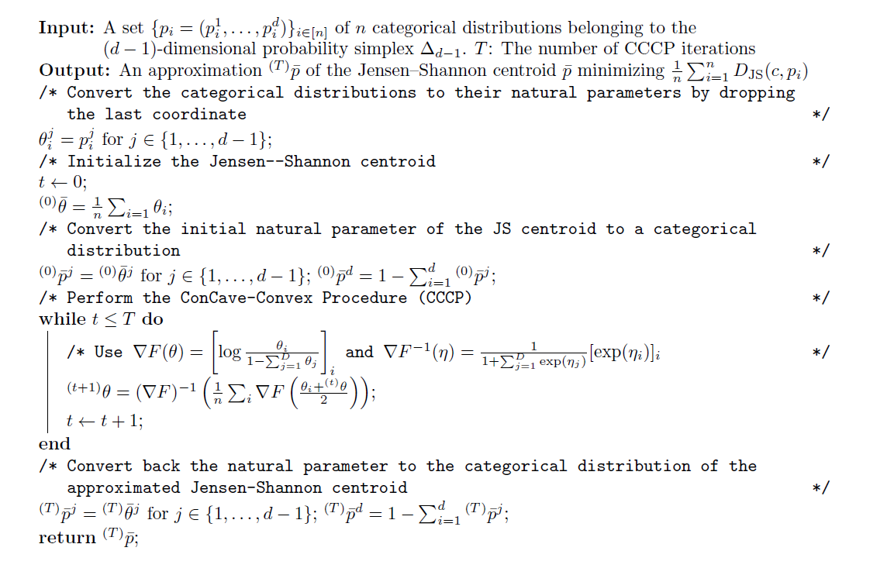

Jensen-Shannon centroid
Consider the set of categorical distributions (normalized histograms) as a mixture family in information geometry.
Jensen-Shannon divergence between two categorical distributions then amounts to a corresponding Jensen divergence.
Uses the Convex-ConCave procedure to locally optimize the JS centroid.

Reference
On a Generalization of the Jensen–Shannon Divergence and the Jensen–Shannon Centroid, Entropy, 2020 (arXiv:1912.00610)